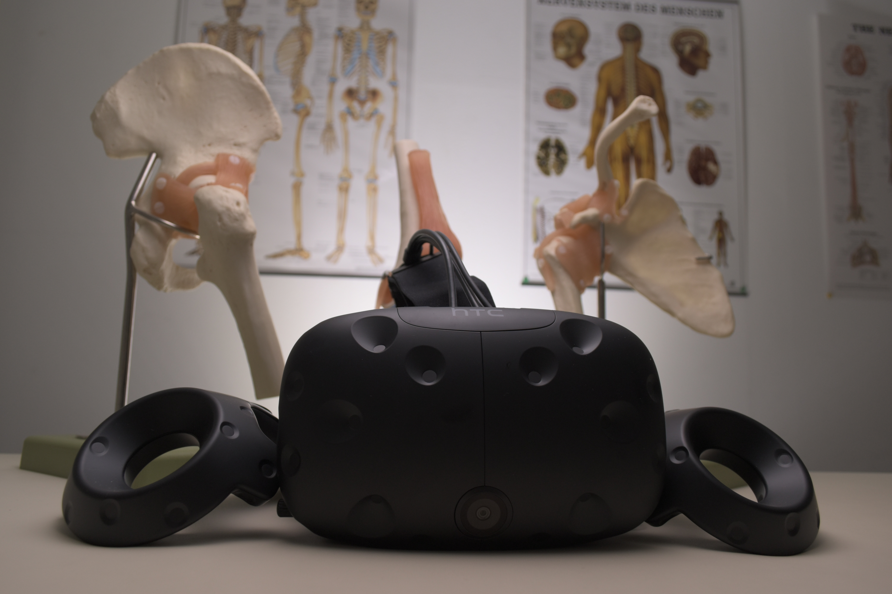

Healthcare Mijn idee voor medisch gebied is het creëren van een virtual reality gebied waar verpleegkunde studenten in opleiding door middel van virtual reality kunnen leren over hun vakgebied. Als voorbeeld wil ik de anatomie van het lichaam nemen. Het lichaam bestaat uit heel veel dingen waarvan het lastig is om dat als student bijvoorbeeld te leren. Virtual Reality kan dan door middel van een VR-bril een lichaam laten zien met daarbij bijv. teksten bij elk lichaamsdeel. Bijvoorbeeld bij de kuit, algemene uitleg over de spierverbindingen die daar lopen of bij het hart wat de riscio’s zijn of welke hartziekten er bestaan.  Anxiety Therapy Voor mensen met een angststoornis is Virtual Reality een hele goede oplossing. Bijvoorbeeld mensen met een angst voor spinnen. Deze personen doen dan een VR-bril op waarbij ze een spin over hun hand of op de tafel zien lopen. Aan het begin kan dit eng zijn voor de gebruiker maar na een tijdje gewent de gebruiker eraan en is het in het echt ook minder eng omdat virtual reality de echte realiteit zo sterk nabootst. Art and Museums Een ander idee is mensen informeren over bepaalde kunst in musea door middel van augmented reality. De persoon kan dan aan het begin van zijn reis door het museum een app downloaden waarbij hij als hij bijvoorbeeld focust op een bepaald schilderij met de cameralens, dat dan er informatie naar voren komt van de kunstenaar achter het schilderij of waar het schilderij over de wereld gereisd heeft (in welke musea het schilderij geweest is etc.). Dit kan de gebruiker dan bij elk kunstwerk bijv. zien.
Trumps muur Dit project is mij pas geleden nog voor mijn oog gekomen op Facebook en ik vond het heel gaaf toen ik erover las. Het is een VR project over de muur die Donald Trump wilde/wil bouwen tussen Mexico en Amerika om illegale immigrantie tegen te gaan. Een team achter het project heeft foto’s/video’s en verslagen gemaakt van de plekken waar de muur zou komen en dit heeft uiteindelijk geresulteerd in een Virtual Reality ervaring van de muur van Trump. Je kunt er zelfs het echte zand tussen je tenen voelen als je daar rondloopt en de immense omvang van de zogeheten muur bekijkt door een Oculus Rift. Wat ik persoonlijk heel gaaf vind is dat het de makers gelukt is om een ervaring van de muur te geven zonder dat die er staat, en daarnaast een soort van politiek statement maken tegen de wil van Trump over de muur. Dit is de link naar het project: : https://www.fastcompany.com/40470305/the-complexity-of-trumps-border-wall-proposal-explained-in-vr
Ik vind persoonlijk VR/AR een heel gaaf onderwerp omdat je het kan uitbreiden op zo veel verschillende vlakken. Dat neemt niet weg dat ik tijdens de colleges niet een optimale beleving hiervan had. Dingen zoals Trumps muur bij research vind ik echt een heel interessant project om aan te kaarten. Zeker ook omdat dit niet perse je eigen plezier tot doel heeft maar het goed kan ingezet worden voor bijvoorbeeld politieke doeleinden. De opties die met VR/AR mogelijk zijn zijn constant uit te breiden en ik denk dat we ermee een rijke toekomst tegemoetgaan.